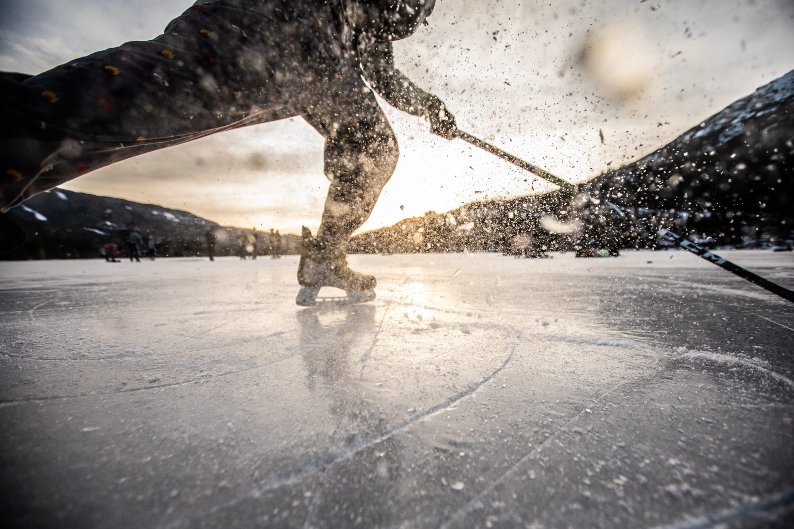
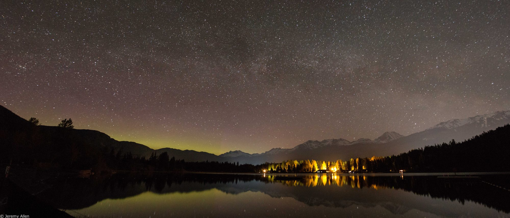
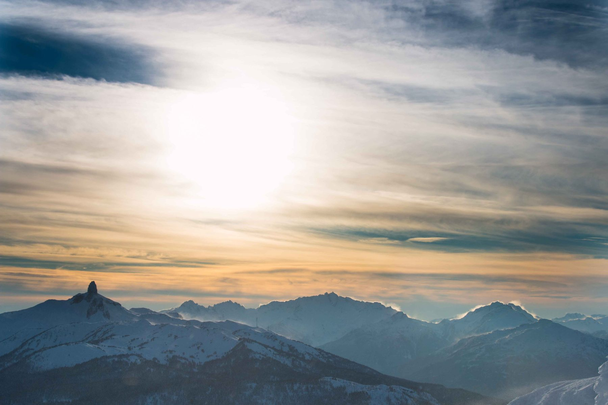

Winter isn't only about skiing
Whistler is famous for the slopes, but some of the best winter memories happen off them. Rest days, mixed groups and families all benefit from a few ideas beyond the lift line. Here are some that go well with a sauna.

Skating on Alta Lake
When the cold arrives and the ice is right, Alta Lake can turn into one of the great skating rinks of the Sea to Sky. But ice is never guaranteed: thickness varies, and conditions can change overnight. Check local reports, carry ice safety gear if you're going far, never go alone and stay off the ice if you have any doubt.
Snowshoeing and quiet walks
A short walk in fresh snow is a good way to reset on a rest day. Look for valley-bottom trails that are well-marked and low-risk, and check avalanche and weather conditions if you head into the mountains.

Clear nights and big skies
The Whistler valley is bright, but on a clear night away from the village lights, the stars are spectacular. Aurora is rare at this latitude, but it does happen during strong geomagnetic storms. Dress warmly, bring a headlamp and give your eyes time to adjust.
Finish with a sauna
Whichever way you spend the day, a wood-fired sauna is the perfect close. Warm up after the cold, soak in the steam, step outside into the snow and repeat. For a private session, Mamquam Sauna delivers a barrel sauna with firewood and a cold plunge to private properties around Whistler. See mobile sauna rentals in Whistler, or read about planning a wellness weekend.

Cold weather safety
- Dress in layers and keep dry clothes for the end of the day.
- Keep cold plunges short, and skip them if you're unwell or have heart or blood pressure issues.
- Watch for slippery decks and paths in the dark.
- Stay hydrated and go easy on alcohol.
Questions
Can you skate on Alta Lake?
In some winters the lake freezes well enough for skating, but ice conditions change quickly and thickness varies. Check local conditions and warnings before going on the ice, and never assume it's safe.
What is there to do in Whistler in winter besides skiing?
Snowshoeing, Nordic skiing, skating when conditions allow, walks around the village, spa visits and a private sauna are all popular on non-ski days.
Can I rent a sauna for my Whistler cabin or Airbnb?
Mamquam Sauna delivers wood-fired barrel saunas to private property around Whistler, Pemberton and Squamish. Check with your host or strata first, and ask us about delivery.
More reading: Après-Ski Sauna in Whistler